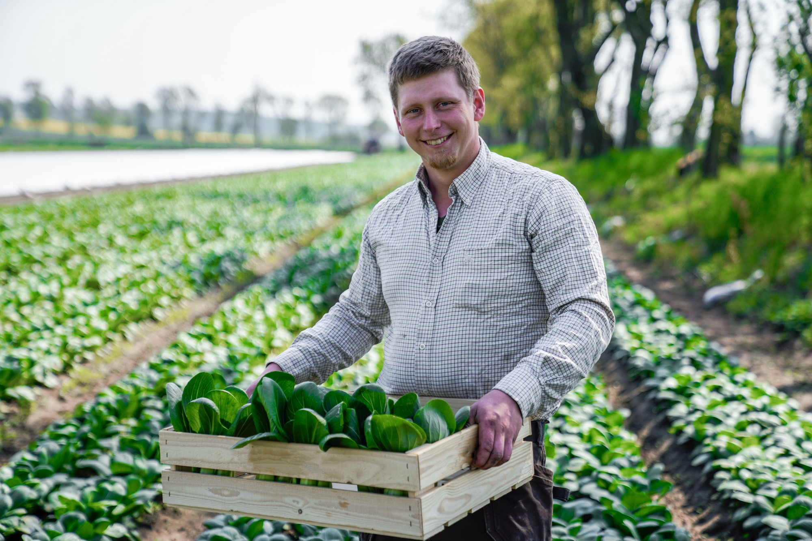
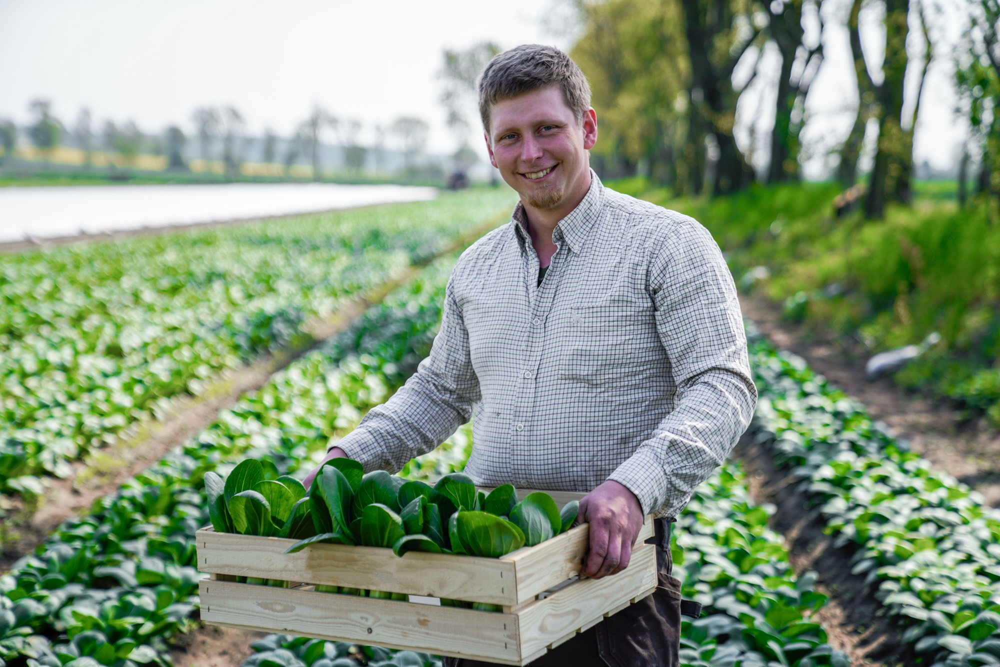

Frukter och historia
Ekologisk odling har funnits i olika former i flera hundra år. Metoderna bygger på naturliga kretslopp, biologisk mångfald och långsiktig hållbarhet.
Ekologisk odling har funnits i olika former i flera hundra år. Metoderna bygger på naturliga kretslopp, biologisk mångfald och långsiktig hållbarhet.
Ekologiska produkter är bättre för miljön, djuren och människors hälsa. De bidrar till renare vatten, friskare jord och minskad klimatpåverkan.